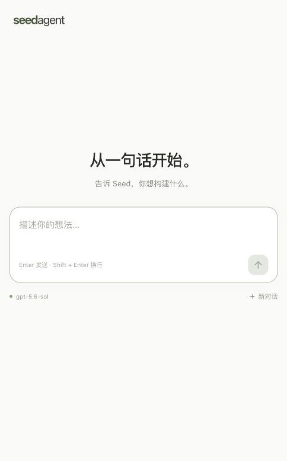

单页聊天预览
项目以单页、一个对话框起步，基础聊天使用assistant-ui。当前保留用户通过对话添加的业务内容；本次只更新权限与工具进度文案。
已接入的交互
真实流式模型回复、Markdown、工具中文进展、停止、重试、新对话、刷新恢复；本地工具按Full Access直接执行，无逐次MCP确认。模型就绪后输入框下方显示实际模型；未就绪或失败显示真实状态。新对话仅切换当前显示，历史仍在本地保留。

检查
真实回复、刷新保留、运行中刷新重连、停止已通过当前浏览器检查。类型检查、Vite打包、4项SSE UTF-8/CRLF/异常格式边界测试通过。JS约706kB/gzip215kB，有体积提示；原有渲染异常边界仍可使用，全部源码允许按需修改，长期交互流畅程度仍待实际体验。
以上截图为前版单页起点，用户后续业务内容以当前页面为准。历史 seedagent-single-chat.png 是TASK004未接AI时的截图；seedagent-front-preview.png为已放弃的多面板布局，不代表当前页面。
2026-10-09 · TASK-20261009-010 至 013 · 规范2026-09-29.1 · 非Git，待人工体验